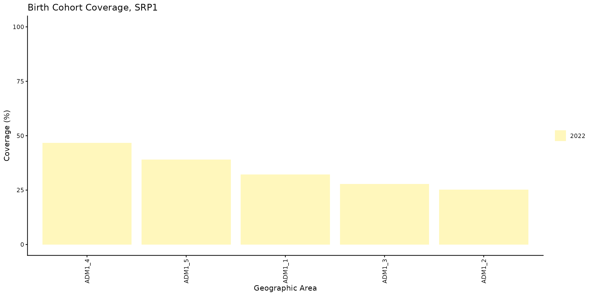

Cobertura por cohorte de nacimiento
OPS/CIM
12 de febrero de 2026
Source:vignettes/articles/es/birth_cohort_coverage_es.Rmd
birth_cohort_coverage_es.RmdFundamento
El objetivo de este indicador es dar seguimiento a una cohorte específica de recién nacidos para conocer su estado de vacunación y estimar el nivel de protección de la población frente a las enfermedades prevenibles por vacunación. Este análisis ayuda a prevenir la acumulación de personas susceptibles, fortalecer la inmunidad colectiva y orientar estrategias de vacunación para quienes no han recibido las dosis necesarias.
La cobertura de vacunación por cohorte de nacimiento se calcula mediante la siguiente fórmula:
Nota
Todas las funciones utilizadas para los análisis de cobertura por cohorte de nacimiento dentro de PAHOabc comienzan con el prefijo
bc_.
Glosario
Cohorte de nacimiento
Una cohorte de nacimiento es el grupo de todas las personas nacidas dentro de un mismo período de tiempo, normalmente un único año calendario. Por ejemplo, la cohorte de nacimiento de 2022 comprende a todas las personas nacidas durante el año 2022.
Divisiones político-geográficas
A lo largo de esta viñeta se hace referencia a distintos niveles de división político-geográfica. Estos niveles son definidos por cada país o territorio y pueden recibir nombres diferentes. PAHOabc no depende de esos nombres locales; por eso, el usuario debe recodificar sus variables para ajustarlas a la estructura que utiliza el paquete.
En concreto, PAHOabc puede distinguir tres niveles administrativos que, listados del nivel superior al inferior, son: ADM0, ADM1 y ADM2.
- ADM0: El país. Este es el nivel administrativo más alto.
- ADM1: La primera subdivisión geográfica del país. ADM0 contiene varias subdivisiones ADM1.
- ADM2: La segunda subdivisión geográfica del país. Cada ADM1 contiene varias subdivisiones ADM2.
Nombres de vacunas
Los conjuntos de datos de ejemplo utilizan una convención específica para nombrar las dosis de vacunas. Es posible que esta convención no coincida con la que usa su país o institución, pero esto no afecta el uso del paquete si los nombres se aplican de manera consistente.
Por ejemplo, los nombres de las vacunas utilizados en el paquete PAHOabc son:
| Abreviatura | Nombre completo |
|---|---|
| SRP1 | Vacuna contra sarampión, rubéola y paperas (1.ª dosis) |
| DTP1 | Vacuna contra difteria, tétanos y tos ferina (1.ª dosis) |
| DTP2 | Vacuna contra difteria, tétanos y tos ferina (2.ª dosis) |
| DTP3 | Vacuna contra difteria, tétanos y tos ferina (3.ª dosis) |
| BCG RN | Vacuna Bacillus Calmette–Guérin (al nacer) |
| YFV1 | Vacuna contra la fiebre amarilla (1.ª dosis) |
Uso
Instalar el paquete
El primer paso para ejecutar los análisis de cobertura por cohorte de nacimiento es instalar el paquete PAHOabc disponible en GitHub.
devtools::install_github("IM-Data-PAHO/pahoabc")Cargar los datos
Las funciones de este módulo requieren tres conjuntos de datos en un formato específico.
- Su RNVe.
- El esquema de vacunación relacionado con este RNVe.
- Opcionalmente, una tabla con denominadores poblacionales al mismo nivel geográfico de desagregación que su análisis.
Para facilitar la prueba de PAHOabc y la comprensión de la estructura requerida, a continuación se presentan los conjuntos de datos de ejemplo que utiliza este módulo.
RNVe
El conjunto de datos pahoabc::pahoabc.EIR proporciona un
ejemplo de Registro Nominal de Vacunación electrónico (RNVe). Es una
tabla nominal simulada con eventos individuales de vacunación. Cada fila
corresponde a una vacunación e incluye información sobre la residencia
de la persona, el lugar donde fue vacunada (ocurrencia), su fecha de
nacimiento y la dosis recibida.
pahoabc.EIR %>% head() %>% kable(caption = "Ejemplo de Registro Nominal de Vacunación electrónico")| ID | date_birth | date_vax | ADM1_residence | ADM2_residence | ADM1_occurrence | ADM2_occurrence | dose |
|---|---|---|---|---|---|---|---|
| 191997 | 2023-08-08 | 2023-12-26 | ADM1_4 | ADM2_4_35 | ADM1_4 | ADM2_4_35 | DTP2 |
| 212189 | 2023-12-20 | 2023-12-26 | ADM1_5 | ADM2_5_61 | ADM1_5 | ADM2_5_61 | BCG RN |
| 118063 | 2022-09-15 | 2023-12-26 | ADM1_2 | ADM2_2_5 | ADM1_2 | ADM2_2_5 | DTP1 |
| 118063 | 2022-09-15 | 2023-12-26 | ADM1_2 | ADM2_2_5 | ADM1_2 | ADM2_2_5 | YFV1 |
| 130751 | 2022-10-27 | 2023-12-12 | ADM1_5 | ADM2_5_55 | ADM1_5 | ADM2_5_55 | YFV1 |
| 136532 | 2021-09-21 | 2023-12-26 | ADM1_3 | ADM2_3_12 | ADM1_3 | ADM2_3_12 | SRP1 |
-
ID: Número único de identificación de la persona. - Fecha de nacimiento (
date_birth): Fecha de nacimiento de la persona. - Fecha de vacunación (
date_vax): Fecha del evento de vacunación. - ADM1: Primer nivel administrativo geográfico del país.
- ADM2: Segundo nivel administrativo geográfico del país.
- Lugar de residencia (
Residence): Lugar donde vive la persona. - Lugar de vacunación (
Occurrence): Lugar donde ocurrió la vacunación. - Dosis (
dose): Variable combinada que representa el tipo de vacuna y su número de dosis correspondiente. Por ejemplo, DTP1 se refiere a la primera dosis de una vacuna que contiene componentes de difteria, tétanos y tos ferina.
Esquema de vacunación
El conjunto de datos pahoabc::pahoabc.schedule define el
esquema nacional de vacunación, con cada dosis y su edad recomendada de
administración (en días). Esta tabla permite determinar si una persona
tiene las vacunas que le corresponden según el esquema.
pahoabc.schedule %>% kable(caption = "Ejemplo de esquema de vacunación")| dose | age_schedule | age_schedule_low | age_schedule_high |
|---|---|---|---|
| SRP1 | 365 | 360 | 420 |
| DTP1 | 60 | 54 | 90 |
| DTP2 | 120 | 116 | 150 |
| DTP3 | 180 | 176 | 210 |
| BCG RN | 0 | 0 | 28 |
| YFV1 | 365 | 360 | 420 |
- Dosis (
dose): Variable combinada que representa el tipo de vacuna y su número de dosis correspondiente. Por ejemplo, DTP1 se refiere a la primera dosis de una vacuna que contiene componentes de difteria, tétanos y tos ferina. - Edad programada (
age_schedule): Edad recomendada de administración de la dosis, en días. - Límite inferior de edad (
age_schedule_low): Límite inferior de la edad objetivo, en días. - Límite superior de edad (
age_schedule_high): Límite superior de la edad objetivo, en días.
Nota
Los nombres de las dosis en la columna
dosedeben coincidir exactamente con los del conjunto de datospahoabc.EIR.
Denominadores poblacionales
Aunque no es obligatorio, este módulo permite usar una tabla de población como denominador para calcular la cobertura. El nivel geográfico de esta tabla debe coincidir con el nivel geográfico del análisis. Por ejemplo, para un análisis a nivel ADM1, la tabla de denominadores poblacionales debe tener la siguiente estructura.
pahoabc.pop.ADM1 %>% head() %>% kable(caption = "Ejemplo de población a nivel ADM1")| ADM1 | year | age | population |
|---|---|---|---|
| ADM1_1 | 2022 | 0 | 1718.189 |
| ADM1_1 | 2022 | 1 | 1808.964 |
| ADM1_1 | 2023 | 0 | 1703.145 |
| ADM1_1 | 2023 | 1 | 1792.443 |
| ADM1_2 | 2022 | 0 | 6575.261 |
| ADM1_2 | 2022 | 1 | 6922.644 |
Esta tabla está en formato largo y contiene la población
(population) de niños de una edad (age)
específica durante un año (year) determinado para un nivel
ADM1.
Nota
Como este análisis se realiza con cohortes de nacimiento, solo se usan las filas donde la edad (
age) es igual a 0 en la tabla de población. Estas filas representan el número de niños que pertenecen a esa cohorte de nacimiento.
Análisis de cobertura por cohorte de nacimiento
Este módulo permite estimar la cobertura de vacunación por cohorte de nacimiento para cualquier vacuna. Para interpretar correctamente los resultados, tenga en cuenta que el indicador representa el porcentaje de personas vacunadas dentro de un año de nacimiento específico, independientemente del año en que fueron vacunadas. Por eso puede diferir de la cobertura administrativa de un año determinado. El usuario también puede seleccionar el nivel de agregación de los resultados: nacional, ADM1 o ADM2.
Flujo de trabajo esperado
Las funciones bc_coverage() y bc_barplot()
permiten analizar y visualizar la cobertura por cohorte de nacimiento.
Su relación se muestra en la Figura 1.

Ejemplo
A continuación se muestra un caso de uso sencillo de
bc_coverage() en el que se calcula la cobertura de
vacunación de la primera dosis de la vacuna que contiene sarampión para
la cohorte de nacimiento de 2022.
# calcular la cobertura
coverage_df <- bc_coverage(
data.EIR = pahoabc.EIR,
data.schedule = pahoabc.schedule,
geo_level = "ADM1",
vaccines = "SRP1", # esto puede ser un vector de vacunas
birth_cohorts = 2022 # esto puede ser un vector de años
)
# mostrar los resultados en una tabla
coverage_df %>%
kable(digits = 2, caption = "Cobertura por cohorte de nacimiento a nivel ADM1")| dose | year_cohort | ADM1 | numerator | population | coverage |
|---|---|---|---|---|---|
| SRP1 | 2022 | ADM1_1 | 558 | 1733 | 32.20 |
| SRP1 | 2022 | ADM1_2 | 3138 | 12428 | 25.25 |
| SRP1 | 2022 | ADM1_3 | 13967 | 50238 | 27.80 |
| SRP1 | 2022 | ADM1_4 | 2977 | 6382 | 46.65 |
| SRP1 | 2022 | ADM1_5 | 1362 | 3488 | 39.05 |
Estos resultados se pueden visualizar con la función
bc_barplot(), como se muestra a continuación.
# visualizar el resultado de bc_coverage()
coverage_plot <- bc_barplot(data = coverage_df, vaccine = "SRP1")
# mostrar
coverage_plot
La revisión de los niveles subnacionales muestra una diferencia
importante: ADM1_4 presenta el mejor resultado de
vacunación (~47 %), mientras que ADM1_2 presenta el
resultado más bajo (~25 %).
Resumen
Al incorporar la cobertura de vacunación por cohorte de nacimiento, PAHOabc ayuda a las autoridades de salud a evaluar el nivel de protección de grupos poblacionales específicos dentro de un territorio. Esta información es útil para la planificación estratégica, incluidas las campañas de seguimiento contra el sarampión y la rubéola, y las estrategias de vacunación de puesta al día contra el VPH.